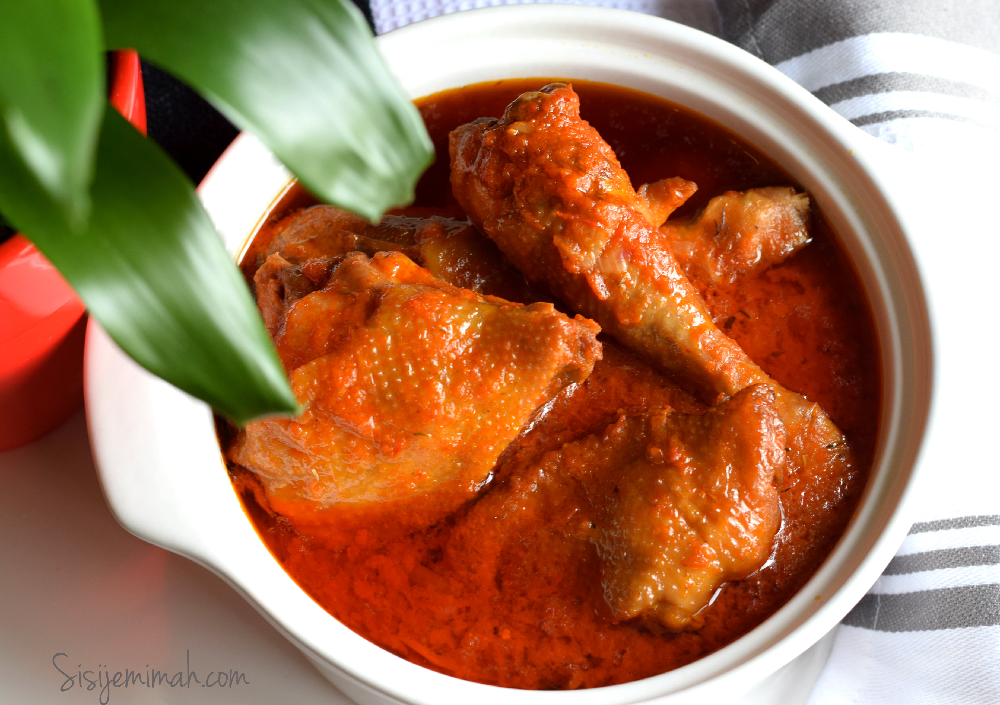

Stew

Nigerian Stew
Nigerian stew is a staple in most African homes made from a blend of tomato puree and red pepper blend,
it is usually served with rice, sweat potatos, yam, beans and the likes
the choice of protein for this gravy can range from chicken to goat meat usually
any choice of protein serve the same purpose
Ingredients
- Tomato
- Chilli Pepper
- Bell pepper
- Garlic
- Ginger
- Onion
- Seasoning Cubes
- Salt
Steps
- blend 0.5kg of tomatos with 100g of fresh chilli pepper, 2 bell pepper, garlic and ginger into a very smooth puree.
Dice one onion, cook choice of protein(chicken)
- In a sauce pan add 200ml of cooking oil of choice and bring to cooking temperature.
- In the very hot oil add the diced onion and allow to cook for 15secs then add the
tomato and pepper blend and cook utill 70% of the water has been evapourtated.
- Into the cooking puree add the stock from your protein and season with herbs and spice as desired.
- Add your protein, cover your sauce pan and allow to cook for 5mins.
- Your typical Nigerian stew is ready! serve with boiled white rice and enjoy!!!